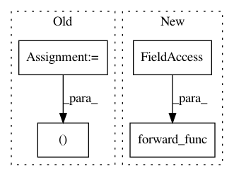

7c2cf787d2cd4028dd25cb8af19b653c9b459e32,sru/cuda_functional.py,SRU_Compute_GPU,forward,#SRU_Compute_GPU#Any#Any#Any#Any#Any#Any#,488
Before Change
else:
x_ptr = 0
stream, fwd_func, bifwd_func, _, _ = self.get_functions()
FUNC = fwd_func if not self.bidirectional else bifwd_func
FUNC(args=[
u.contiguous().data_ptr(),
After Change
forward_func = sru_cuda_lib.sru_bi_forward if self.bidirectional else \
sru_cuda_lib.sru_forward
forward_func(
h,
c,
u.contiguous(),
x_,
weight_c,
bias,
init_.contiguous(),
mask_c if mask_c is not None else empty_ftensor,
mask_pad.contiguous() if mask_pad is not None else empty_btensor,
length,
batch,
d,
k_,
self.activation_type,
skip_type
)
self.save_for_backward(u, x, weight_c, bias, init, mask_c)
self.intermediate = c
if x.dim() == 2:
In pattern: SUPERPATTERN
Frequency: 3
Non-data size: 4
Instances
Project Name: asappresearch/sru
Commit Name: 7c2cf787d2cd4028dd25cb8af19b653c9b459e32
Time: 2019-08-24
Author: taolei@csail.mit.edu
File Name: sru/cuda_functional.py
Class Name: SRU_Compute_GPU
Method Name: forward
Project Name: asappresearch/sru
Commit Name: e25c3820aaa1ebb9c0bf7731467e24a2a2592a54
Time: 2019-10-22
Author: taolei@csail.mit.edu
File Name: sru/cuda_functional.py
Class Name: SRU_Compute_GPU
Method Name: forward
Project Name: chainer/chainerrl
Commit Name: 9f72feeb95434490ab005a8a6916c618c471c3af
Time: 2016-11-02
Author: muupan@gmail.com
File Name: chainerrl/policy.py
Class Name: GaussianPolicy
Method Name: __call__